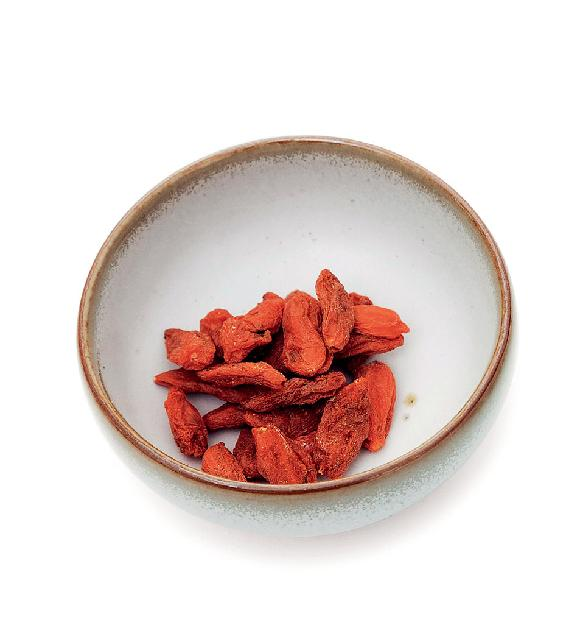
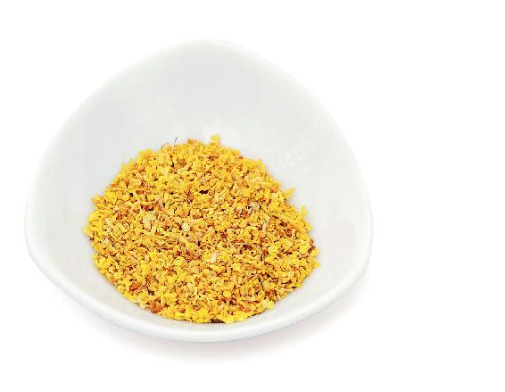
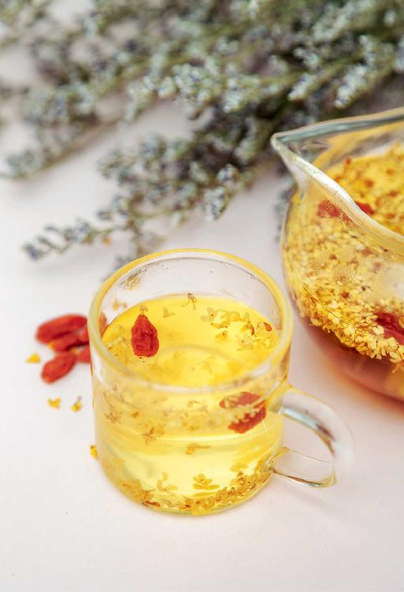

到了深秋，也就是秋天的第三个月，有些朋友晚上有时就睡不着了，或者睡着了，在半夜时分又会醒来，之后翻来覆去再难入睡，等到天快亮了，才又昏昏沉沉地睡去。
这就是深秋寒露节气身体失常的表现。
从寒露节气开始进入深秋，离冬天只有一个月，这时候，一片秋风肃杀的景象。我们讲秋气主杀，属金，而半夜时分睡不着的现象，就是秋气伤肝的具体表现，也就是我们通常所说的“金克木”。
如果您不只是在交寒露节气的一两天出现这种状况，而是连续出现，那就说明您肝血亏虚了，需要尽快调养。
秋天的第三个月，我们除了继续秋季养肺滋阴的主题之外，还要增加一个养肝血的养生重点。
肝是属木的，秋天是属金的，秋风就像刀剑一样，所以有“秋风肃杀”一词。一阵秋风吹过，树叶就会应声而落，这是自然界的金克木。对人来说，秋风吹过，我们人体的“树叶”也会掉落，人体的“树叶”是什么？就是头发。头发脱落得特别多，这也是金克木的结果，就是因为人体的肝血被伤到了。
秋天，脱发多、夜里睡不好，这都是肝血亏虚的表现。
当一个人血虚去体检，查指标却没有到贫血的程度，但是从传统养生的角度来说，血虚是身体提前发出的信号，就是在身体体检指标还没到有疾病的程度时，身体已经提前告诉了你。
根据身体发出的血虚的信号，我们可以顺藤摸瓜去定位，看它影响的是五脏六腑的哪一脏，是心，还是肝。
人体的血虚分心血虚和肝血虚两种，只有把它区分好了，才能有目的地去补血。
很多朋友补血都非常盲目，只要一听说什么食物补血就去吃，但最后发现效果并不佳。这就是没有先搞清楚自己的血虚属于哪一种，只有把它分清楚了才能真正地补到血。
会感觉心在咚咚咚地跳，有一种很不安的感觉，这叫作心跳不安。
不容易入睡，晚上睡觉时必须把窗帘拉好，一点光线也不能有，一点声音也不能有。如果是换了一张床，换了一个房间，或者是换了一个地方就睡不好。另外，做梦比较多，但醒来以后什么也记不住。
心血虚的人是很容易头晕的，因为心是主人思考的，所以心血虚的人就会经常头晕，还会犯糊涂，记忆力也会减退。假如您觉得自己的记性越来越不好，要警惕心血虚。
您可以对照下面说的，检查一下自己有没有肝血虚。很多人即便平时没有血虚的表现，也可能在寒露节气发现，这个时节多少也有一些肝血虚的表现。
肝血虚表现在眼睛上，就是视力容易减退。有些朋友年纪还不是很大，眼睛已经老花了，还容易干涩，患有干眼症，这就是肝血虚的表现。
肝血虚表现在指甲上，就是指甲变薄，很容易劈，很容易折，有的朋友指甲上还会出现一些竖向的棱纹。
肝血虚的中老年女性容易出现手脚发麻，甚至有些朋友的腿脚会不由自主地抽动。
如果在秋天的时候头发大量脱落，这是肝血不足的表现。其实，如果一个人的发量不多的话，也说明肝血有点不足。
在深秋的这个月，我们如何来养肝血呢？可以把深秋分成两半，前半个月，也就是寒露节气这十五天，主要是以理血、活血为主；后半个月，也就是霜降节气这十五天，主要是以暖血、补血为主。
深秋的这一个月是我们调养肝血的关键时期，希望您不要错过。
调理肝血虚，可以喝桂子暖香茶和桂花银耳羹。
桂子暖香茶泡好以后，不用着急喝，先闻一闻它的香气。这个香气，不仅对鼻子有一点点疏通的作用，人体吸入以后，还可以疏肝理气。您闻过桂花的香气，再来喝这道茶饮时，效果会更好。
有一些朋友由于肝气不疏，嘴里的味道不是很好，那么，喝了这道茶饮，也有助于清新口气。
桂子暖香茶


原料：干桂花3克，枸杞子1把。
做法：把干桂花、枸杞子放在一起，用沸水冲泡即可。
如果您白天没有时间做桂子暖香茶，那有一个简化的方法，就是在炖银耳羹的时候可以加一把枸杞子在里面。无论您炖的是银耳莲子羹，还是银耳百合羹，都是可以加一把枸杞子的。起锅的时候再撒一把桂花，就成一道桂花银耳羹了。它不仅有桂子暖香茶的作用，还有银耳羹的作用，用它来调理肝血虚也是很不错的。
之前说过，在深秋时节，人体很容易出现肝血虚的症状。比如，有些朋友一年四季可能眼睛都比较干涩，指甲比较薄，有时候手脚发麻，甚至还会不由自主地抽动。女性朋友还容易发生月经量少，甚至闭经等情况。
在寒露时节，喝桂子暖香茶或桂花银耳羹，都是可以起到很好的调理作用的。
关于桂花，有的朋友不知道怎么找到好的，其实超市或者卖花草茶的商店，都有干品的桂花。买的时候要注意两点：
第一，要买新鲜的干桂花，不要买陈年的旧货，因为存放时间久的桂花，香气比较淡薄。
第二，要买没有熏硫的。桂花熏硫，色泽会更鲜亮好看，还能掩饰原料本身的变色、不新鲜和没有彻底干透等质量问题。
有些朋友可能有条件采摘到新鲜的桂花，要特别注意以下两点：
第一，刚摘的桂花里边可能会有腻虫，您要把它放上一两小时，等里边的小虫子爬出来以后，再用淡盐水泡洗，才可以用。
第二，容易拉肚子的朋友不要食用新鲜桂花，因为桂花有一个通的作用，不仅能活血，也能通便。新鲜桂花通便作用更强。
干桂花其实也是有通便作用的，但相比新鲜的桂花，它不太会引起突然的腹泻。肠胃不好的人，喝桂花可以配甘草陈皮梅子汤。这样一碗飘着桂花香的酸梅汤，既有传统风味，又有很好的功效。
如果您受了点寒，有一点咳喘，喝桂子暖香茶时可以去掉枸杞，用桂花、陈皮一起泡茶来喝，化痰止咳的作用会更好。
新鲜的桂花怎么保存呢？要用很干净的玻璃瓶子，最好是无菌无油的玻璃罐来存放，一层桂花一层盐，放满后盖紧盖子。特别要注意的是，不要在下过雨以后去采摘桂花，因为桂花是很怕雨的，雨一打它就会落，不容易晾干，还容易发霉。

除了用盐存放桂花，还可以用糖或蜂蜜来腌制桂花，注意事项跟用盐来保存是差不多的。
另外，在超市里我们也可以买到瓶装的糖桂花。
用它来给银耳羹、葛根粉或梅子汤调味特别好。做好的银耳羹盛到碗里以后，加一把枸杞，再放一勺糖桂花。这样呢，你也不必再放糖了，同样可以起到桂子暖香茶的作用。
糖桂花，最好是买没有添加防腐剂的。
如果想自制糖桂花，用桂花干品也是可以的。我有一个最简单的方法：取一瓶蜂蜜，把干桂花直接拌进去，放置几天就可以用了。
桂子暖香茶和桂花银耳羹，小孩子都是可以喝的，小孩子喝了还有一个促进消化的作用。
以前，传统的点心里面经常会放一点桂花，这不仅是为了增加它的甜味、香味，还因为桂花能帮助我们消化甜食，有一个暖胃、健胃的作用。
同时，还能祛除口气——当胃里有积食的时候，人就会有口气。
所以，如果您怕孩子吃甜食不容易消化，可以在食物里给他加一点桂花。
读者评论：喝桂子暖香茶，感觉肤色好了很多
阿君：喝桂子暖香茶，感觉整个人特别舒服。
张丽芳：这几天一直和孩子一起喝桂子暖香茶，感觉肤色好了很多。小女儿以前睡觉不踏实，这几天也好多了，感谢老师。
方圆：我月经量很少，基本上两天就没了，冬天也特别怕冷，睡眠也不好，喝桂子暖香茶后好多了，眼睛也不干涩了，感谢陈老师。
太阳伞：国庆期间，断断续续喝了几次桂子暖香茶，现在一到饭点就感觉饿，吃饭也觉得香了。以前最爱姜枣茶，现在又爱上了桂子暖香茶。
随缘：这道茶饮确实好，喝了桂子暖香茶，冬天不那么怕冷了，起夜的次数也比以前少了，月经也顺畅了。
人生如梦：我就是像老师说的那样，嗓子疼、干，鼻子也干，昨天喝了一天桂子暖香茶，嗓子好了很多。
允斌解惑：桂子暖香茶有祛斑的效果
戴丹：白天喝桂子暖香茶，晚上喝桂圆莲子茶，可以吗？
允斌：可以。
茶语：陈老师，我脸上的斑淡多了，桂子暖香茶还要继续喝吗？
允斌：继续喝，以巩固祛斑的效果。
向日葵（年年有余）：这几个月我要备孕，桂子暖香茶还可以喝吗？
允斌：可以喝的。
呂嘉（lang～蘭兒）：女性经期可以喝桂子暖香茶吗？
允斌：如果月经不畅就可以喝。